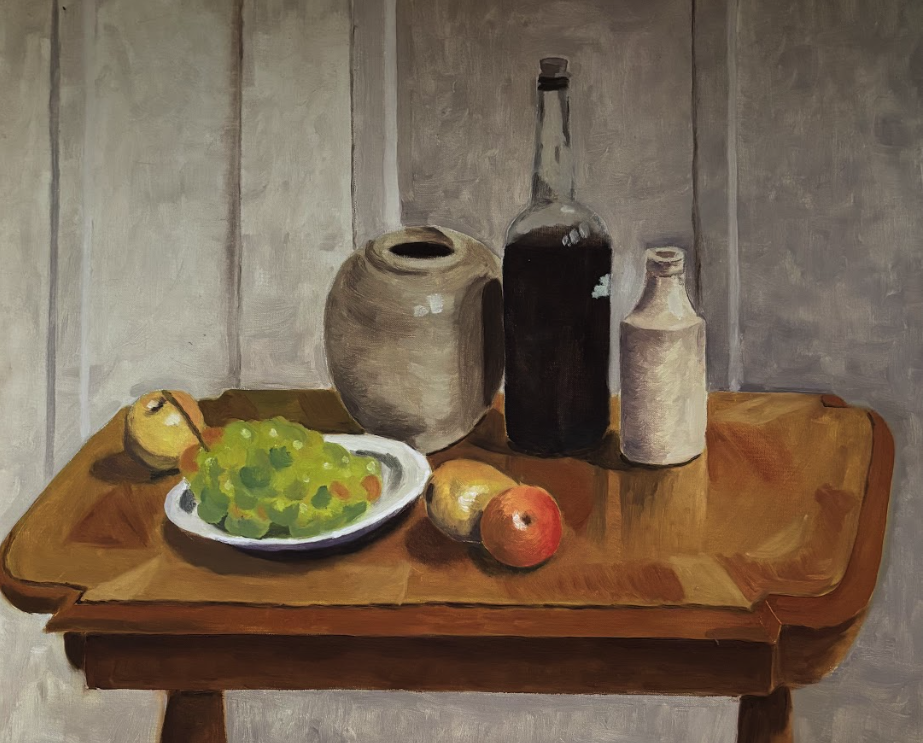
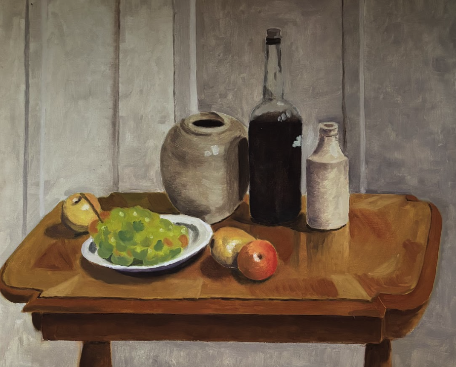
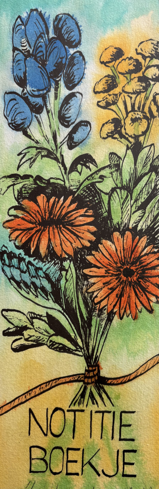
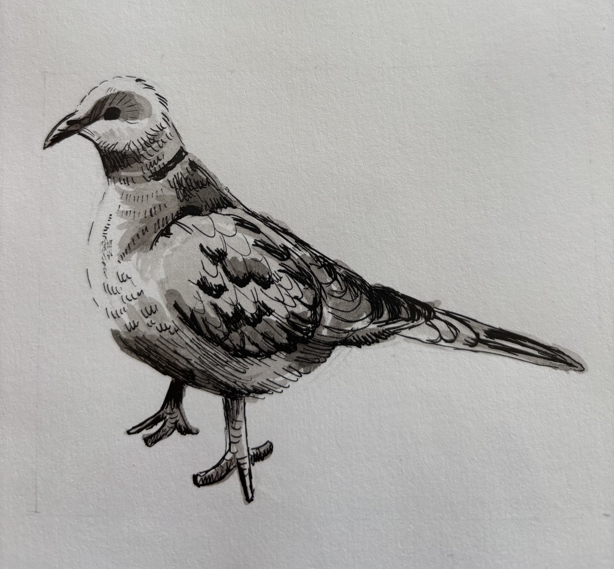
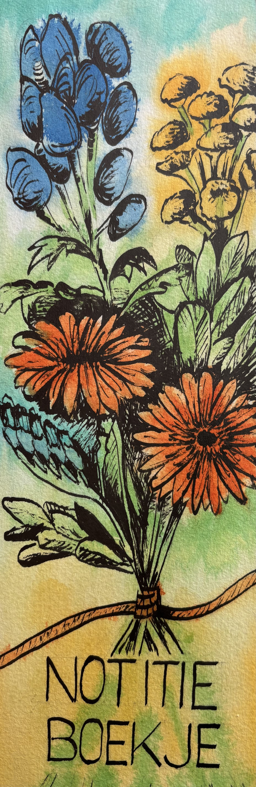
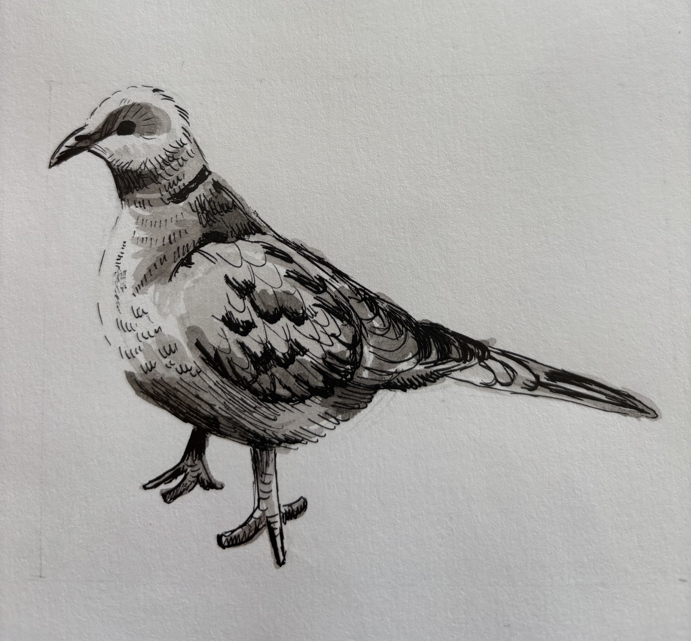

Als kind tekende ik al graag. Mijn favoriete cadeautjes waren een schetsboek en kleurpotloden. Met een kladblokje was ik ook al heel tevreden. Vaak tekende ik stipfiguren na. Deze Dopey heb ik zelfs gefiguurzaagd.

Van kladblok tot prentenboek
Als kind tekende ik al graag. Mijn favoriete cadeautjes waren een schetsboek en kleurpotloden. Met een kladblokje was ik ook al heel tevreden. Vaak tekende ik stipfiguren na. Deze Dopey heb ik zelfs gefiguurzaagd.
Als student op de PABO koos ik tekenen als verdiepingsvak. Ik heb mooie herinneringen aan de dagen in het atelier van de tekendocent. Ik leerde portretten en stillevens uitwerken met houtskool en olieverf.
 

Door studie, werk en later het gezin, raakte het tekenen op de achtergrond. Wel gaf ik met veel plezier tekenlessen aan de kinderen in mijn klas. Op een dag besloot ik mijn oude hobby weer op te pakken met een online tekencursus ‘Illustreren’. Het was heerlijk om weer met tekenen bezig te zijn. Uitdagende opdrachten tot een goed einde brengen: het gaf me veel voldoening. De meeste opdrachten bestonden uit het natekenen van voorwerpen, personen en natuur, maar verder in de cursus kwam ook het tekenen vanuit de eigen fantasie om de hoek kijken.
 





Toen ik de cursus had afgerond, wilde ik mezelf opdrachten gaan geven. Dat deed ik door een verhaal te schrijven en dit te illustreren. Zo was ik verzekerd van een aantal nieuwe opdrachten. Het werd ‘Bo Big en de baas van het bos’. Voor de personages stonden sprookjesfiguren model. Met inkt, kleurpotlood en een zwarte fineliner ging ik aan de slag om het verhaal door middel van 25 illustraties tot leven te brengen.


Door dit werk te delen met een collega, die schrijver is van kinderboeken en prentenboeken, kreeg ik van hem het (nog niet uitgegeven) prentenboekverhaal ‘Het laatste koekje’ om te illustreren. Ook bij dit verhaal maakte ik gebruik van inkt, kleurpotlood en fineliner. Ik leerde nu om te denken in spreadsheets en om rekening te houden met de plaats van de tekst. En het allerbelangrijkste: het incasseren van enige kritiek, hoewel mijn collega/schrijver voornamelijk enthousiast was. Best lastig voor mij: ik tekende immers voor mijn plezier en wilde het liefst alleen positieve feedback. Inmiddels heb ik geleerd dat mijn werk alleen maar beter wordt van een kritische blik van een andere persoon.


Er volgden nog twee prentenboekverhalen die ik mocht illustreren. Het eerste verhaal was ‘Kom jij bij mij eten?’ Ik wilde een ander materiaal uitproberen en ging aan de slag met een collage-techniek in combinatie met acrylverf. Ook verwerkte ik in sommige illustraties natuurproducten, zoals koffieprut en bloemen. Een enorme klus, maar erg leuk om te doen.


Workshops
Om mijn kennis en vaardigheden uit te breiden deed ik o.a. een cursus van vijf dagen bij een professionele illustratrice. Bij haar leerde ik vooral het opzetten van een spreadsheet en wat de verdeling van het vlak voor de levendigheid van je illustratie doet. Voor mijn uiteindelijke werk verzon ik twee hoofdpersoontjes en een verhaal, dat ik nog steeds eens verder moet uitwerken.
Ook deed ik een basiscursus portrettekenen bij DARA (Dutch Atelier of Realist Art). Het urenlang nauwkeurig natekenen van een oor of oog is een prettige, bijna meditatieve, bezigheid. Toch bleek het niet datgene te zijn waar ik mijn tijd aan wil besteden. Veel liever gebruik ik mijn eigen fantasie voor verhalen en illustraties. Ik leerde van dit ‘zijpaadje’ wel kritisch te kijken naar mijn eigen werk en te blijven schaven tot het goed is. Als uitstapje voor mijn verjaardag deden we met het gezin een workshop ‘muurschilderen’. Voor de gezelligheid en om eens te ervaren hoe het is om een muurschildering te maken. Best lastig nog om te werken op een verticaal vlak, in plaats van op een horizontaal vlak. Wel heel leuk om hier in de toekomst nog iets mee te doen. Toen besloot ik het verhaal ‘Wolkenkneder en de Wind’ uit te gaan werken met inkt en krijt. Het was even puzzelen hoe ik dit verhaal over de wolken vorm zou geven. Maar daardoor juist interessant.
Het viel niet mee om op grote vellen de lucht te maken. Het ging nogal eens mis. Ook kreeg de schrijver halverwege de klus bedenkingen over het schaduwverhaaltje dat ik had bedacht om de illustraties interessanter te maken.
Ik liep er tegenaan dat analoog werk moeilijk te veranderen is. Daarom ben ik me gaan verdiepen in het digitaal tekenen.
Toen ik dit enigszins onder de knie had, ben ik van voren af aan begonnen met ‘Wolkenkneder en de Wind’.
Nu kon ik mijn werk aanpassen, zoveel ik maar wilde en was het gemakkelijker om een mooie achtergrond te maken.
Momenteel probeer ik mijn digitale tekenskills te vergroten door een nieuw eigen verhaal uit te werken waarin Raaf de hoofdrol speelt.